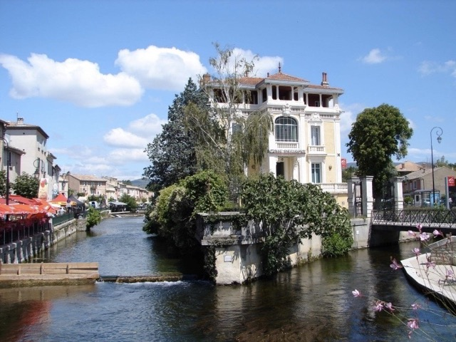
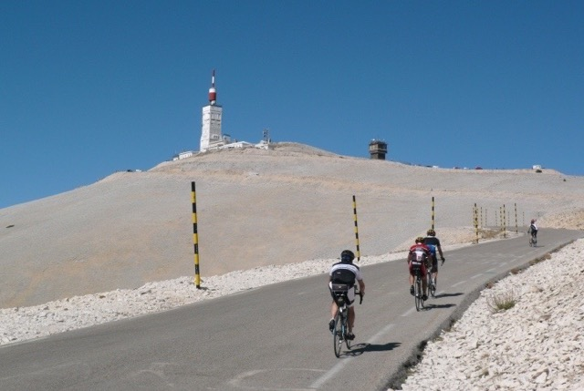
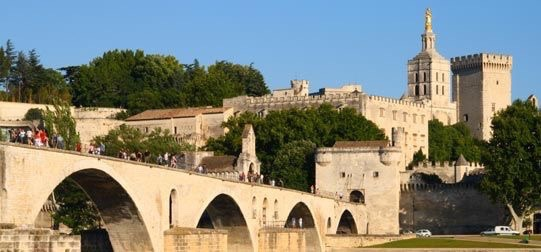

Découvrez les petits villages pitoresques et les marchés Provençales
Gordes
Au sommet du village, l'église et le château font face à la plaine agricole et aux collines du Luberon. Grâce à sa situation privilégiée, son charme exceptionnel et son architecture typique, Gordes est classé "un des plus beaux villages de France".
Site de Gordes >
L'isle sur la sorgue
Surnommée la Venise Provençale, car plusieurs canaux et bras de la Sorgue qui surgit de la Fontaine de Vaucluse, située à quelques kilomètres, déambulent dans la ville. Isle sur la Sorgue se partage entre tourisme, agriculture et commerce des antiquités.
Fontaine de Vaucluse
La Fontaine de Vaucluse est le village le plus visité de Provence. Le site exceptionnel ‘Vallis Clausa’, doit son nom à la mystérieuse source de la Sorgue.
Site de la région ‘le Pays des Sorgues’ >
Roussillon
Roussillon doit sa réputation à ses falaises et à ses impressionnantes carrières d'ocre à ciel ouvert. Ses couleurs rouges, jaunes et marrons contrastent avec les forêts de pins verdoyantes éclairées par le ciel bleu de la Provence.

Le Mont-Ventoux un géant qui domine la Provence
Le Mont Ventoux attire chaque année des milliers de cyclistes
Sommet de légende, col mythique, terrifiant par sa pente, impitoyable
Le Mont Ventoux porte bien son autre nom de « Géant de Provence ».

Visitez la ville historique d’Avignon
(1h - 66km)
Derrière les remparts superbement conservés, vous découvrirez la cité des Papes après avoir franchi une des sept portes principales : le Palais des Papes construit au XIVème siècle et sa place très animée, le célèsbre Pont d'Avignon, les musées du Petit palais et du Palais du Roure.
Les ruelles anciennes les façades restaurées vous charmerons
Site d'Avignon